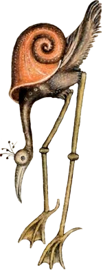
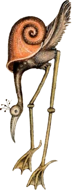

Marginalia
About Marginalia
Marginalia are notes, comments, or illustrations placed in the margins of a document. Before the printing press, medieval scribes who wrote out manuscripts by hand often included marginal illustrations of people, animals, and plants. Often, the marginalia looks carefully planned out and elaborate, but other times it looks like the scribe was bored and started doodling. Characters depicted in marginalia can be very bizarre, such as a rabbit wielding a spear and riding a snail-human hybrid into battle or a fish with a human face and legs. These kinds of comical or grotesque characters are called drolleries. (1)
Sometimes marginalia represents something in the text, for example, depicting a person mentioned or illustrating a fable that relates to the text. Other times, the marginalia seems to be completely unrelated to the text, though we're probably missing some of the context that would've made it make sense to medieval people. I'm sure people several hundred years from now will find 21st-century memes just as incomprehensible as we find some medieval marginalia.
Not everything I've included on these pages is actually marginalia. Some of these are images from medieval bestiaries, for example. Bestiaries are illustrated books that describe and depict different types of animals, often including mythological creatures. Medieval bestiaries were not necessarily meant to educate people about the natural world but rather to convey the moral and religious lessons different animals were believed to represent. (2) Because of this and because the artists usually had no way to see many of these animals in real life, usually going off of descriptions from others, animals in bestairies can sometimes be very strange-looking, bearing very little resemblance to the actual animal. (3)
I have loved these bizarre and sometimes oddly cute creatures for a long time. Last year I started looking through some digitised manuscripts, screenshotting my favourites, and making them into transparent PNGs. Obviously, none of this is my original artwork or anything, so feel free to use them for whatever you want. I also have higher-resolution versions of most of these.
Digitised Manuscripts:
- The Luttrell Psalter
- Le Livre des hystoires du Mirouer du monde
- Romans arthuriens
- Chroniques sire Jehan Froissart
Other links:
Marginalia/medieval art blogs: Discarding Images and Cuties in Codices.
Amazing database of medieval bestiaries and beasts: The Medieval Bestiary


 
